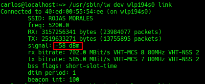
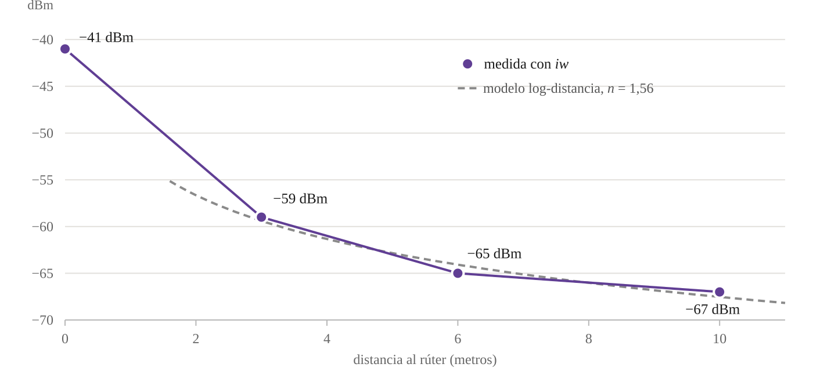

Medición del indicador de fuerza de la señal recibida (RSSI) de un ordenador portátil con iw, y ajuste de un modelo de pérdida logarítmica con la distancia
Carlos Luis Rojas Aragonés
Actividad 3.1. Calcule el indicador de fuerza de la señal recibida (RSSI) de un ordenador portátil. El planteamiento pide distanciarse del rúter de forma gradual y registrar la fuerza de la señal en dBm.
Lo que medí en cuatro posiciones: la señal cae de −41 dBm pegado al rúter a −67 dBm a diez metros. Son 26 dB, es decir que la potencia que llega a la antena del portátil se divide por unas 400 veces, y el enlace sigue funcionando. La caída no es proporcional a la distancia sino a su logaritmo: los tres puntos alejados se ajustan a un exponente de pérdida n = 1,56 con R² = 0,96.
Conviene separar dos cosas que el enunciado junta. El estándar IEEE 802.11 define el RSSI como un entero sin unidades en una escala propia de cada fabricante, entre 0 y un valor máximo que el propio fabricante elige; no es una potencia y no es comparable entre tarjetas. Lo que interesa en ingeniería es la magnitud física que hay detrás: la potencia recibida, expresada en dBm, es decir en decibelios referidos a un milivatio:
P[dBm] = 10 · log10(P[mW] / 1 mW)
En Linux el controlador de la tarjeta entrega al núcleo ese valor ya convertido a dBm a través de la interfaz nl80211, y es el número que aparece en el campo signal. Por eso todo el documento trabaja en dBm y no en porcentaje: el porcentaje es una escala inventada sobre el dato, no el dato.
Medí con iw, la utilidad de línea de órdenes que habla directamente con el subsistema inalámbrico del núcleo Linux mediante nl80211. El Cuadro 1 recoge las alternativas que consideré y el motivo de descartarlas.
| Herramienta | Qué entrega | Decisión |
|---|---|---|
iw dev … link | signal en dBm, más frecuencia, tasas de transmisión y BSSID | Elegida. Es la magnitud física, sin escalar; no necesita privilegios de administrador para leer el enlace; la salida es estable y se puede registrar con un guion |
iwconfig | Signal level, a veces en dBm y a veces en unidades arbitrarias según el controlador | Descartada. Se apoya en las Wireless Extensions, una interfaz obsoleta y sin mantenimiento desde hace más de una década |
nmcli dev wifi | Columna SIGNAL de 0 a 100 | Descartada. Ese porcentaje es una correspondencia definida por NetworkManager sobre el valor en dBm: pierde información y no es la unidad que pide el planteamiento |
wavemon | Panel interactivo con la señal en dBm y su historia reciente | Descartada como instrumento, útil como comprobación. Es una capa de presentación sobre las mismas llamadas que usa iw, de modo que no aporta un dato distinto y sí dificulta el registro reproducible |
netsh wlan show interfaces (Windows) y las aplicaciones de móvil | Porcentaje de calidad, o dBm sin calibración documentada | Descartadas. O no dan dBm, o no dicen cómo los obtienen |
Hay un punto que no es de comodidad sino de método: la cadena de medida debe ser la más corta posible entre el radio y el número que se anota. iw es el último eslabón antes del controlador, y todo lo demás de esta lista está por encima de él.
La interfaz inalámbrica del portátil es wlp194s0. La orden que devuelve el estado del enlace asociado es:
/usr/sbin/iw dev wlp194s0 link
La Figura 1 es una captura real de esa salida. Corresponde a una posición intermedia tomada antes de la serie de medidas, y se incluye para documentar el formato del que se extrae el dato, no como uno de los cuatro puntos del Cuadro 3.

Figura 1. Salida de iw dev wlp194s0 link. El campo resaltado, signal: −58 dBm, es la potencia recibida de las tramas más recientes del punto de acceso asociado.
La captura permite además fijar las condiciones del enlace, que hay que declarar porque condicionan la lectura de cualquier medida de señal:
| Campo | Valor | Para qué sirve |
|---|---|---|
Connected to | 40:ed:00:55:54:ee | BSSID del punto de acceso. Comprobarlo en cada punto garantiza que no hubo un cambio de radio a mitad de la serie, lo que invalidaría la comparación |
SSID | ROJAS MORALES | Red doméstica propia, condición necesaria para medir con legitimidad |
freq | 5200 MHz | Canal 40 de la banda de 5 GHz. La banda importa: a 5 GHz la atenuación con la distancia y con los obstáculos es mayor que a 2,4 GHz |
signal | −58 dBm | El dato de la actividad |
rx bitrate / tx bitrate | 702,0 y 585,0 Mbit/s, VHT-MCS 8 y 7, 80 MHz, 2 flujos | Consecuencia observable de la señal: con 802.11ac, dos flujos espaciales y 80 MHz de canal, la tarjeta sostiene la modulación alta mientras el margen se lo permite |
beacon int / dtim period | 100 y 1 | Cada 100 unidades de tiempo (unos 102 ms) llega una trama de baliza, de modo que el valor de signal se refresca varias veces por segundo aunque no haya tráfico |
muestras.csv.| Distancia (m) | Señal (dBm) | Potencia (nW) | Δ frente a 0 m (dB) | Modelo (dBm) | Residuo (dB) |
|---|---|---|---|---|---|
| 0 (junto al rúter) | −41 | 79,4 | 0 | no aplica | no aplica |
| 3 | −59 | 1,26 | −18 | −59,4 | +0,4 |
| 6 | −65 | 0,32 | −24 | −64,1 | −0,9 |
| 10 | −67 | 0,20 | −26 | −67,5 | +0,5 |
Tres observaciones que el cuadro deja ver y que conviene no pasar por alto:
La forma estándar de leer estas cuatro cifras es el modelo de pérdida logarítmica con la distancia, que en términos de potencia recibida se escribe
P(d) = A − 10 n log10(d) (1)
donde A es la potencia recibida a un metro y n el exponente de pérdida, que vale 2 en espacio libre y sube por encima de 3 cuando hay tabiques y obstáculos que atravesar. Ajustando (1) por mínimos cuadrados sobre los tres puntos de 3, 6 y 10 metros, el punto de 0 metros queda fuera porque el logaritmo de cero no está definido y porque a esa distancia no se cumplen las condiciones de campo lejano que el modelo supone:
P(d) = −51,96 − 15,57 · log10(d) → n = 1,56
con R² = 0,963 y un error cuadrático medio de 0,65 dB, por debajo del escalón de un decibelio con el que el controlador informa el dato. El ajuste, por tanto, es tan bueno como la resolución del instrumento permite comprobar.

Figura 2. Potencia recibida frente a distancia al rúter. Los puntos son las cuatro medidas del Cuadro 3; la curva discontinua es el modelo (1) ajustado a los puntos de 3, 6 y 10 metros y prolongado hasta once. El punto de 0 metros queda claramente por encima de la prolongación de la curva, como corresponde a una medida tomada fuera del intervalo ajustado.
Qué significa n = 1,56. Un exponente por debajo de 2 quiere decir que entre los 3 y los 10 metros la señal se atenuó menos de lo que lo haría en espacio libre: 8 dB observados frente a los 10,5 dB que predice la propagación libre para ese mismo tramo. No es una anomalía: en interiores es el efecto conocido de la propagación guiada, cuando las paredes de un pasillo o una habitación reflejan el frente de onda y las réplicas llegan a sumarse en fase con la señal directa, de modo que el recinto se comporta parcialmente como una guía de onda. La lectura práctica es que en este trayecto el entorno ayudaba en lugar de estorbar, lo que solo ocurre con visión directa y sin tabiques intermedios.
Y qué significa el punto de 0 metros. Los 18 dB de caída entre la posición de contacto y los 3 metros son demasiados para el modelo ajustado: si esa posición estuviera a un metro, el ajuste predeciría solo 7,4 dB de caída hasta los 3 metros. La explicación no es que el modelo falle sino que «0 metros» no es cero: si se supone propagación libre entre ambas posiciones, 18 dB corresponden a una separación real de antenas de unos 0,4 metros. Es decir que la primera medida se tomó al lado del rúter, no en su misma antena, y que la pendiente empinada de ese primer tramo es exactamente lo que cabe esperar cuando la distancia se duplica varias veces en poco espacio.
La actividad pedía registrar la fuerza de la señal en dBm alejándose del rúter, y el registro está en el Cuadro 3: de −41 dBm en contacto a −67 dBm a diez metros. Lo que el ejercicio enseña, más allá de las cuatro cifras, son tres cosas.
La primera es de unidades. El decibelio comprime, y esa compresión es justamente su utilidad y su trampa: 26 dB se leen como un cambio pequeño y son un factor de 400 en potencia. Cualquier decisión de diseño que se tome sobre la lectura lineal de una escala logarítmica estará mal calibrada.
La segunda es de forma funcional. La señal no cae con la distancia sino con su logaritmo, de modo que el coste de alejarse no es constante: los tres primeros metros se llevaron el 69 por ciento de la pérdida total. En el diseño de una cobertura inalámbrica, eso es lo que hace que la posición del punto de acceso importe más que su potencia.
La tercera es de método, y es la que me parece más transferible. El instrumento elegido determina qué se puede afirmar después. Si hubiera medido con nmcli y anotado porcentajes, tendría cuatro números decrecientes y ninguna posibilidad de ajustar un exponente de pérdida, de convertir a nanovatios ni de comparar con la propagación en espacio libre; el porcentaje habría destruido, antes de escribirlo, todo lo que el apartado 6 pudo calcular. Elegir iw no fue una preferencia de herramienta: fue la condición para que la medida admitiera un modelo.
IEEE (2021). IEEE Standard for Information Technology. Telecommunications and Information Exchange between Systems. Local and Metropolitan Area Networks. Part 11: Wireless LAN Medium Access Control (MAC) and Physical Layer (PHY) Specifications, IEEE Std 802.11-2020.
Rappaport, T. S. (2024). Wireless Communications: Principles and Practice, 3.ª ed., Cambridge University Press. Modelo de pérdida logarítmica con la distancia y valores típicos del exponente n en interiores.
Proyecto iw y nl80211, documentación del subsistema inalámbrico del núcleo Linux, wireless.docs.kernel.org.